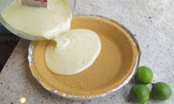

Key Lime Pie Recipe
Ingredients Required
DOUGH:
- 3/4 cup fat-free (skim) milk
- 6 tablespoons fresh lime juice
- 2 tablespoons cornstarch
- 1/2 cup cholesterol- free egg substitute
- 1/2 cup reduced- fat sour cream
- 12 packets sugar substitute or equivalent 1/2 cup sugar
- 4 sheets phyllo dough
- Nonstick butter-flavored cooking spray
- 3/4 cup thawed frozen fat-free nondairy whipped topping
- Fresh raspberries and orange peel (optional)
Step by Step Procedure
- Combine milk, lime juice and cornstarch in medium saucepan. Cook over medium heat 2 to 3 minutes, stirring constantly until thickened. Remove from heat.
- Add egg substitute; whisk constantly for 30 seconds to allow egg substitute to cook. Stir in sour cream and sugar substitute; cover and refrigerate until cool.
- Preheat oven to 350°F. Spray 8 (2-1/2-inch) muffin cups with cooking spray; set aside.
- Place 1 sheet of phyllo dough on cutting board; lightly spray with cooking spray. Layer 3 more sheets of phyllo dough on top of first, lightly spraying each sheet with cooking spray.
- Cut stack of phyllo dough into 8 squares. Gently fit each stacked square into prepared muffin cups; press firmly against bottoms and sides. Bake 8 to 10 minutes or until golden brown. Carefully remove from muffin cups; cool on wire rack.
- Divide lime mixture evenly among phyllo cups; top with whipped topping. Garnish with fresh raspberries and lime slices, if desired.
|

Nutritional Facts
| Calories: |
82 |
| Total Fat: |
1g |
| Sugars: |
1g |
| Total Carbs: |
13g |
| Cholesterol: |
5mg |
|